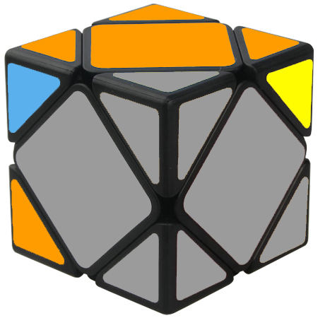

Првиот дел од решавање на еден Skewb ни претставува да одбереме со која боја сакаме да започнеме, доколку започнеме со Сина, во следниот дел од оваа фаза
ќе го решаваме спротивниот т.е зелениот, истото важи и за белата-жолтата и црвената-портокаловата.
Местење на една страна
Во нашиот случај би започнале со решавање на Портокаловата страна. Каде сакаме да ја добиеме оваа состојба:
Бидејќи оваа фаза е интуитивна - не може да се претпостави каде би можеле да се најдат делчињата кои на вас ви се потребни, во прилог има неколку ситуации
кои би можеле да ви помогнат со цел да го наместите делчето на потребното место. Во овој дел единствено нешто што треба да пазите е редоследот на боите.
1)
2)
3)
4)
Решение на 1: R F' R'.
Решение на 2: F R F' R'.
Решение на 3: F' L' F L.
Решение на 4: L' F L.
Местење на спротивната страна
Овој дел може да биде скокнат во ситуација ако ќошињата со спротивната боја(во наш случај црвената) се наместени како на сликата:
Но голема е веројатноста тоа да не се случи па имаме потреба од Algoritmot
R' L R L' кој ќе ни биде потребен во овие 2 случаеви:
Случај 1:
Случај 2:
Сега треба коцката да ја завртиме кон нас, така што би ја гледале како на сликата:
Сега можеме да го искористиме алгоритмот спомнат погоре :
R' L R L'. По искористување на алгоритмот би стигнале до Случајот 2 каде повторно
го користиме алгоритмот со што ги имаме наместено сите ќошиња. Сега може да продолжиме на следната фаза.